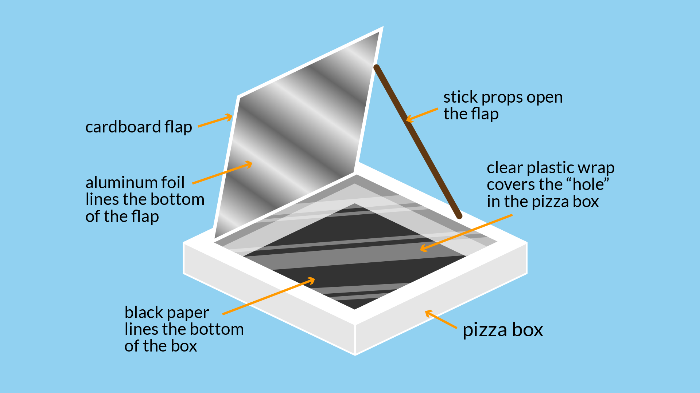

How a Solar Oven Works
Solar ovens use reflective surfaces to concentrate sunlight onto a dark cooking pot inside an insulated box.
The glass cover traps heat (greenhouse effect) → temperatures can reach 120–180°C (250–350°F).
- No electricity or gas required
- Perfect for baking, boiling, roasting, pasteurizing
- Ideal for sunny regions & off-grid living

Why Use a Solar Oven?
Eco-Friendly
Zero carbon emissions during cooking
Cost Free
Sunlight is free — save on gas/electricity
Safe & Healthy
No smoke, no open flame, retains nutrients
Disaster Ready
Works when power & fuel are unavailable
Build a Simple Solar Oven
Materials Needed
- Cardboard box (big pizza box or deeper)
- Aluminum foil or reflective mylar
- Black paint or black pot/pan
- Clear plastic/oven bag or glass
- Insulation (newspaper, styrofoam)
- Scissors, glue, tape
Tip: The darker and bigger the box → the better it performs.
Quick Steps
- Line inside of box with foil (reflective side up)
- Paint pot black or use black cookware
- Cut flap in lid and cover with clear plastic
- Insulate sides & bottom
- Place in direct sun, angle toward sun, cook 2–4 hours